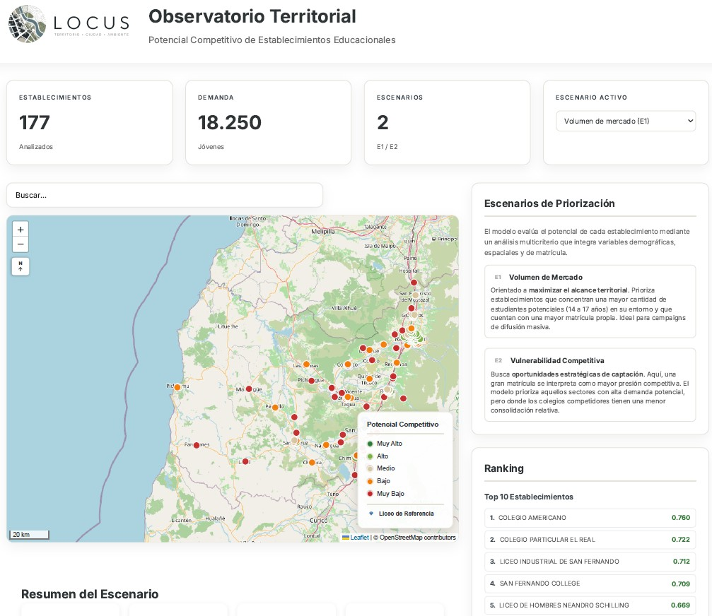
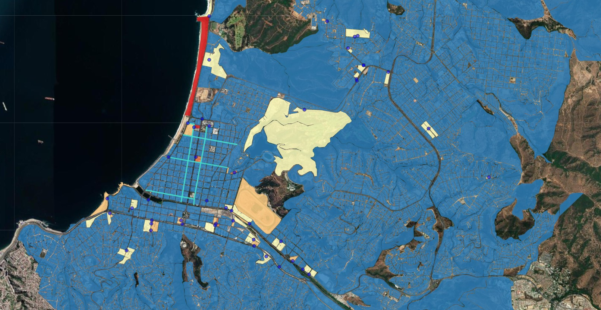
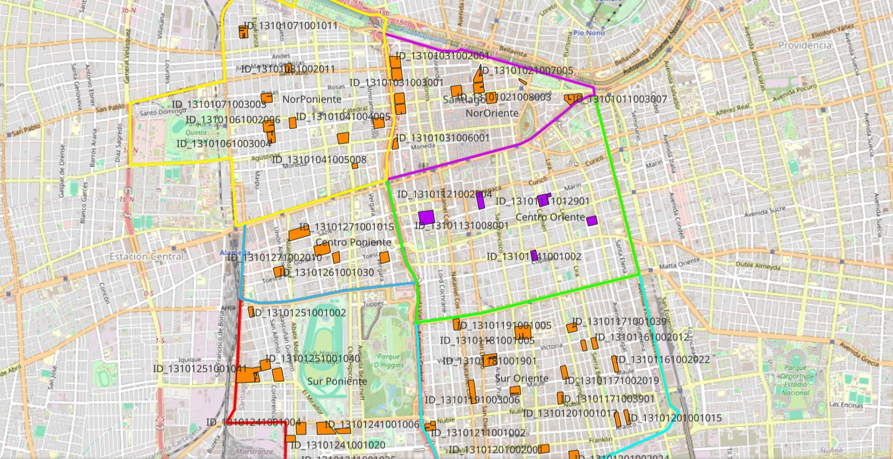
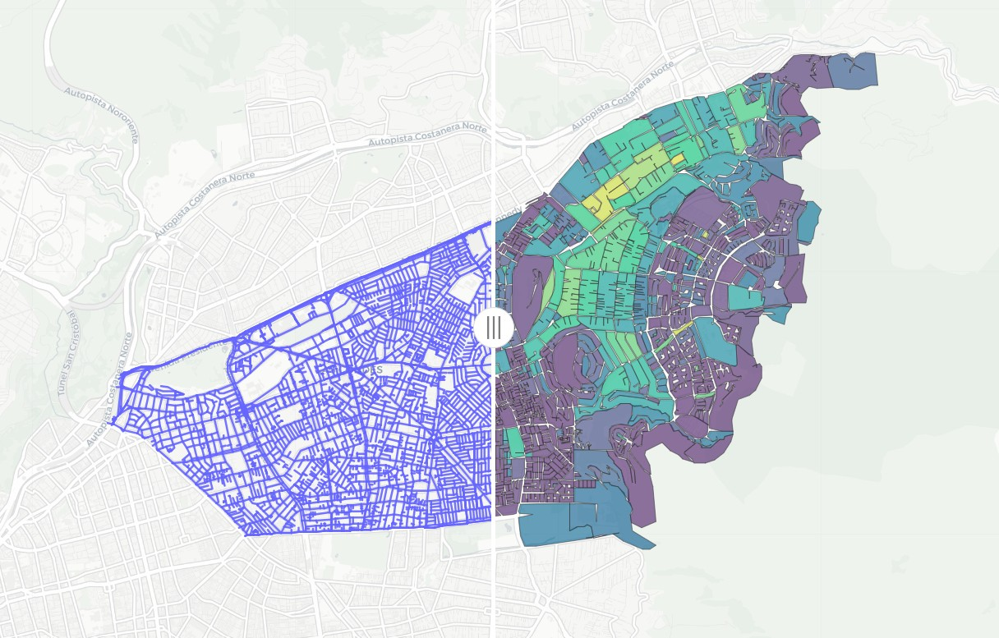

01
Análisis Territorial
Caracterización espacial, diagnóstico, evaluación multicriterio y apoyo a la planificación territorial.
Conocer más →Integramos análisis territorial, sistemas de información geográfica, ciencia de datos e investigación aplicada para comprender la ciudad, el territorio y el ambiente desde una mirada multidisciplinaria.
LOCUS es un laboratorio dedicado a la investigación aplicada, el análisis territorial y el desarrollo de herramientas que integran información espacial para apoyar la planificación y la toma de decisiones.
Nuestro trabajo combina Sistemas de Información Geográfica, ciencia de datos, cartografía, análisis multicriterio y visualización para comprender fenómenos territoriales desde una mirada interdisciplinaria.
Caracterización espacial, diagnóstico, evaluación multicriterio y apoyo a la planificación territorial.
Conocer más →Estudios ambientales, paisaje, infraestructura verde, movilidad y desarrollo urbano.
Conocer más →Automatización de procesos, desarrollo cartográfico, análisis geoespacial y visualización interactiva.
Conocer más →Una selección de metodologías, visualizaciones y herramientas desarrolladas por LOCUS para explorar problemáticas territoriales desde una perspectiva geoespacial.

Plataforma interactiva desarrollada para integrar información territorial, escenarios multicriterio, indicadores y cartografía web orientada al apoyo en la toma de decisiones.

Desarrollo de un indicador espacial que integra siniestros, infraestructura ciclista y variables territoriales para representar condiciones de riesgo mediante cartografía interactiva.

Levantamiento, integración y visualización de información territorial mediante plataformas cartográficas para apoyar procesos de gestión.

Delimitación de unidades territoriales, integración de indicadores y análisis espacial para apoyar diagnósticos urbanos.
La investigación constituye el punto de partida para desarrollar herramientas capaces de transformar datos espaciales en conocimiento útil para el territorio.
Estudiamos la relación entre ciudad, ecosistemas, paisaje e infraestructura verde para comprender procesos de transformación territorial.
Desarrollamos metodologías basadas en SIG, automatización, programación y análisis espacial para apoyar procesos de planificación.
Analizamos redes, infraestructura, transporte y desplazamientos para comprender la relación entre personas y territorio.
Integramos indicadores, modelos multicriterio y análisis espacial para apoyar procesos estratégicos de planificación.
LOCUS reúne un equipo interdisciplinario con experiencia en geografía, arquitectura, geomática, inteligencia territorial y comunicación técnica para desarrollar estudios basados en evidencia.
Especialista en análisis territorial, Sistemas de Información Geográfica (SIG), automatización en R, inteligencia territorial y desarrollo de plataformas cartográficas. Cuenta con más de 8 años de experiencia en planificación territorial, movilidad urbana y análisis geoespacial.
Experiencia en análisis espacial, procesamiento de información geográfica, construcción de indicadores territoriales y elaboración de cartografía temática para apoyar procesos de planificación.
Especialista en análisis estadístico y espacial, ciencia de datos e inteligencia territorial. Posee más de 7 años de experiencia en dashboards, Machine Learning y procesamiento de información.
Arquitecta con experiencia en proyectos de espacio público, movilidad urbana, participando en el diseño y desarrollo de ciclovías, parques urbanos, plazas y otros proyectos orientados al mejoramiento del entorno urbano. Su trabajo integra criterios de diseño, funcionalidad, accesibilidad y sostenibilidad.
Si buscas desarrollar un estudio territorial, una plataforma cartográfica o una investigación aplicada, estaremos encantados de conversar.
Escríbenoslocusterritorial@gmail.com